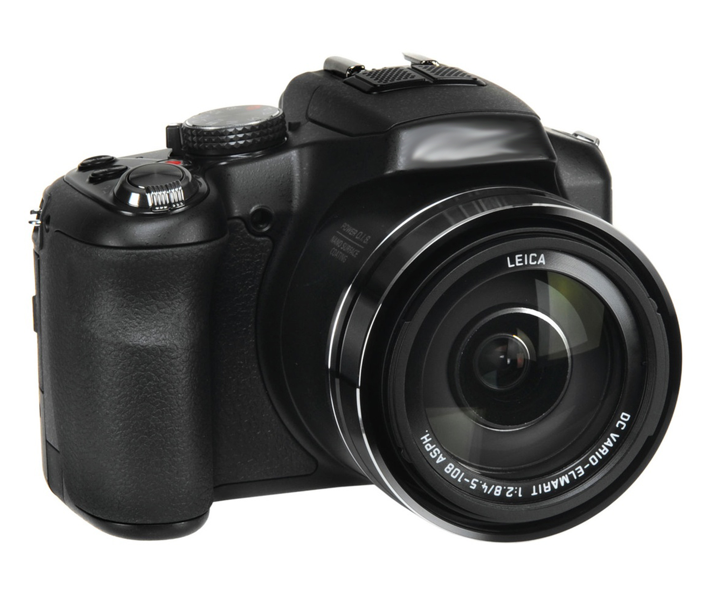

Bienvenue sur ce site
Ce site présente les grands thèmes de la photographie numérique, étudiés en cours de SNT (Sciences Numériques et Technologie) au lycée. Tu peux naviguer entre les pages grâce au menu en haut.

Les grandes parties du site
- L'historique de la photographie numérique
- Les images numériques et les capteurs photo
- Le traitement d'image
- Les métadonnées EXIF
Ce que tu vas apprendre
- Comment fonctionne un capteur photo
- Ce que sont les pixels et la résolution
- Comment une image est traitée par un ordinateur
- Quelles informations sont cachées dans une photo
- L'évolution de la photographie depuis ses débuts
Résumé des pages du site
| Page | Thème principal | Concept clé |
|---|---|---|
| Historique | Évolution de la photo | Kodak, pixels, numérique |
| Capteurs | CCD et CMOS | Pixels, résolution, couleur |
| Traitement | Modification d'image | Compression, filtres |
| Métadonnées | Données cachées | EXIF, GPS, date |
💡 Le saviez-vous ?
En 2023, plus de 1 400 milliards de photos ont été prises dans le monde, principalement avec des smartphones. La photographie numérique a complètement remplacé la pellicule argentique dans le grand public.
Vidéo d'introduction
Voici une courte vidéo pour introduire le sujet :
Source principale
Les informations de ce site proviennent du cours SNT disponible sur : pixees.fr — SNT Photographie Numérique
⬆ Retour en haut